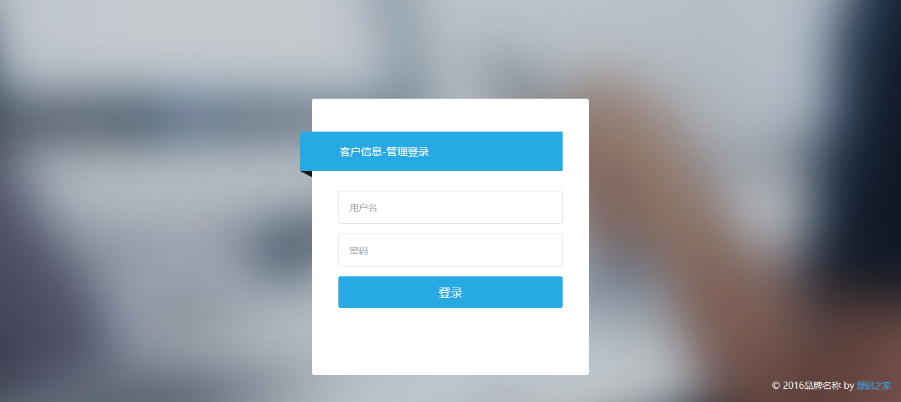

- 姓名：郑楠
- 姓别：女
- 参加工作时间：2015-10
- 户口所在地：河北-邯郸
- 现居住城市：北京
- 工作性质：全职
- 工作地点：北京
- 行业类别：互联网
- 职位类别：WEB前端开发

客户信息管理系统
实现客户信息以及公司与客户间联系记录的统一管理，避免因人员流动带来的客户资源丢失，同时可以帮助企业快速便捷的浏览客户全貌，提高客户满意度，扩大企业收益。
Hello,我是郑楠
我是一名前端工程师
我热爱这个日新月异的IT行业！
- 熟练掌握语义化HTML和具有兼容性的CSS模式；擅长Rem单位实现强大的屏幕适配布局；
- 擅长运用Ajax和跨域请求调取后台数据，使网页实现异步更新，使前后端解耦，在前台实现大部分业务逻辑和交互逻辑，优化网站前端性能;
- 熟悉依赖注入、MVC等常见的技术和设计模式，熟悉Angular路由，模块重用与双向数据绑定开发现代的SPA程序；
- 熟悉RestJs的组件化开发，实现页面的样式与布局；
- 熟练运用JQuery库和Bootstrap、swiper等实现网页动画特效；熟悉本地离线缓存等热门技术；
- 熟悉NodeJS,MySQL,有一定PHP后端相关知识，可以使用PHP实现简单页面；
- 对Angular2.0,VueJS等炙手可热的前端框架有一定研究与学习；
- 具有优秀的沟通、协调能力，了解SVN，Git等版本控制系统的使用流程，能够多人协同开发；
联系信息：
邮箱：18201637358m@sina.cn
Q Q ：2538300535
知乎：来檬Citrus
微信：18201637358
微博：http://weibo.com/5829807923/profile?topnav=1&wvr=6&is_all=1
个人评价：
本人心愿：愿世界和平！
本人阳光爱笑、执着、适应力强、纯纯的欢乐豆开心果；
思维敏捷，积极主动完成本职工作，竭尽全力把工作做到最好，积极面对问题，敢于挑战自我；
具有较强的亲和力、协调沟通能力强，能够建立良好的合作氛围，注重团队合作和积累知识；
生活丰富多彩，喜欢做菜，唱歌，逛街，看电影...可以的话一起happy happy go喔!